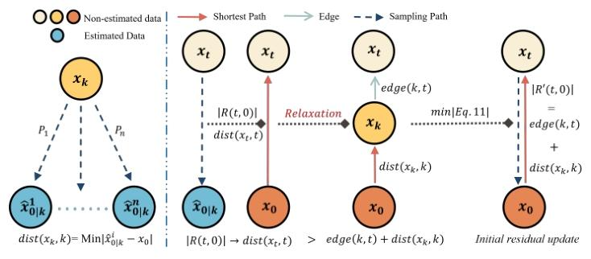
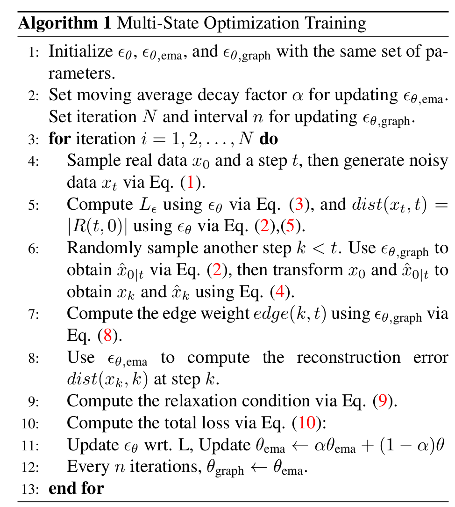
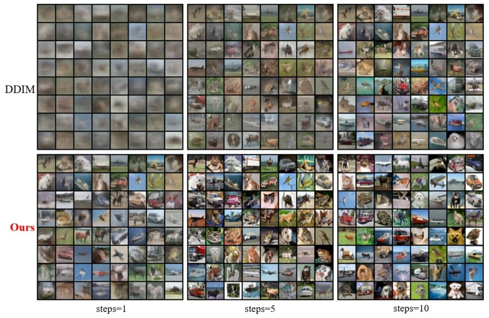
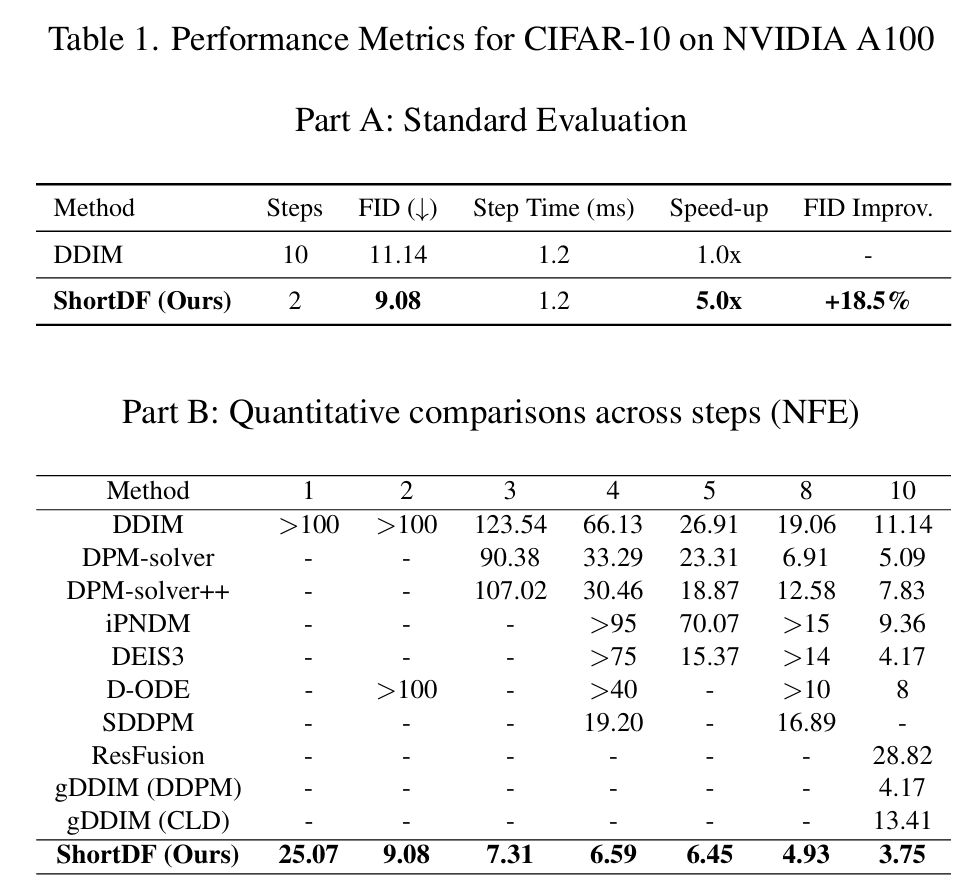
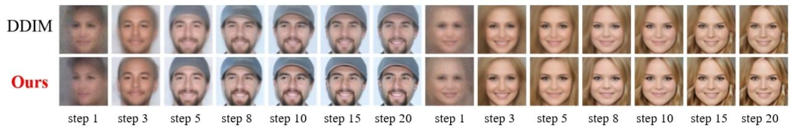
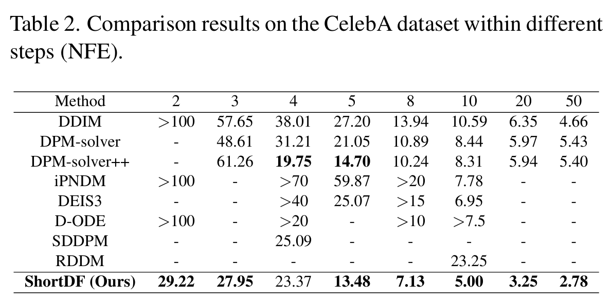
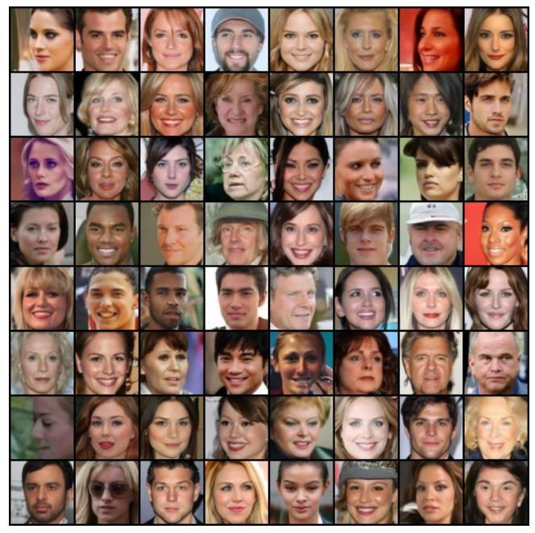
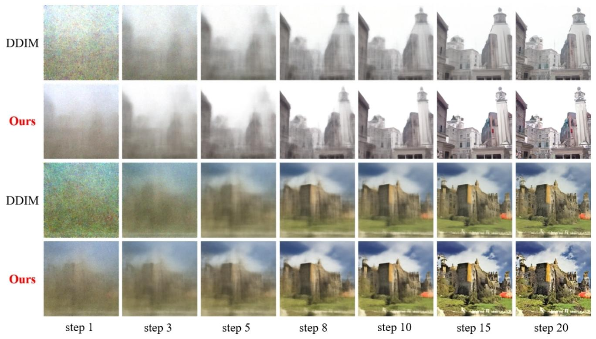
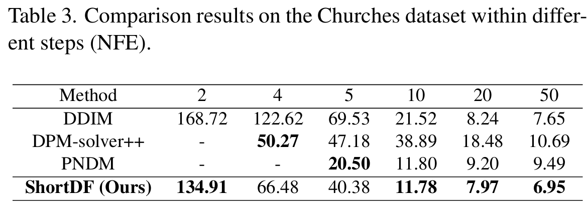
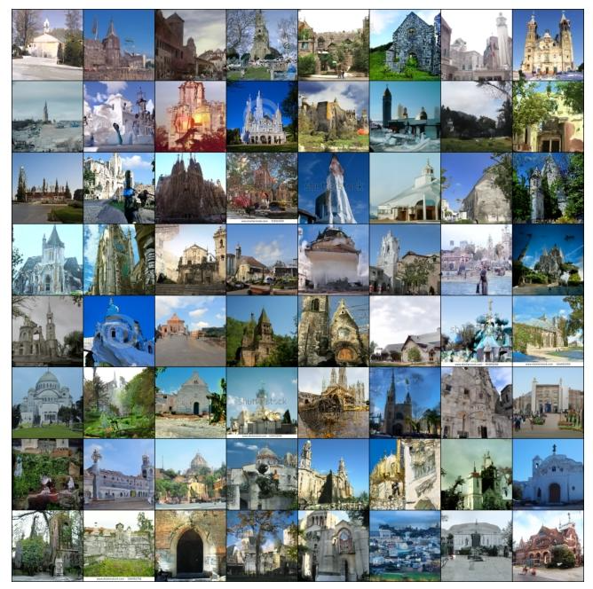

全文翻译
摘要
在本研究中，我们提出了一种基于最短路径建模的新型去噪扩散模型，该模型通过优化残差传播来同时提升去噪效率和质量。借鉴去噪扩散隐式模型（DDIM）和图论的见解，我们的模型被称为最短路径扩散模型（ShortDF），它将去噪过程视为一个以最小化重建误差为目标的最短路径问题。通过优化初始残差，我们提高了反向扩散过程的效率和生成样本的质量。在多个标准基准上的大量实验表明，与现有技术相比，ShortDF显著减少了扩散时间（或步骤），同时提高了生成样本的视觉保真度。我们认为，这项工作为基于扩散的交互式应用铺平了道路，并为快速数据生成奠定了基础。代码可在https://github.com/UnicomAI/ShortDF获取。
1. 引言
近年来，生成模型取得了显著的进展，其中去噪扩散模型在多个领域展现出卓越的性能，例如语音合成、2D或3D视觉资产生成以及其他应用场景[2,4,26,27]。这些模型通过向数据中逐渐添加随机噪声并学习其反向过程来捕捉数据的固有分布。
尽管生成质量和多样性得到了极大的提升，但模型仍存在计算负荷大、耗时久的问题[28,34]。这限制了扩散模型在实时场景中的进一步应用，特别是在需要快速响应的情况下，如交互式图形编辑和实时视频处理（尽管我们很少考虑这些场景）[1,12]。为解决这些问题，研究人员一直在积极探索更高效的策略。传统的扩散模型通常需要数百次迭代才能获得高质量的结果，这导致了相当高的计算成本[8,23]。最近的研究致力于通过知识蒸馏等技术降低模型复杂度，将多步扩散采样过程压缩到单步学生网络中[15,19,28]。然而，准确逼近这种高维度、复杂的采样过程仍然是一项具有挑战性的任务。
与基于蒸馏的方法相结合，其他研究人员提出了更快的数值求解器，这些求解器依靠当前的步长来估计下一个解[34]。虽然扩散步骤的数量从1000步减少到了不到20步，但这些方法[18,22,30]面临着生成质量下降的困境。此外，进一步减少采样步骤往往会导致性能下降[3]。总之，在快速采样和高生成质量之间取得良好的平衡并非易事，这也是本文的研究重点。
在本文中，我们提出了ShortDF模型，该模型通过一种新颖的优化框架实现了上述平衡，该框架在传播残差的同时保持了较高的生成质量。基于去噪扩散概率模型（DDPM）和去噪扩散隐式模型（DDIM），我们整合了图论技术以减少重建误差。通过将去噪过程构建为图论中的最短路径优化问题，我们能够在不影响生成质量的前提下提高过程的效率。图1清晰地说明了本文提出的概念。
|  |
|---|
| 图1. 对每个反向步骤进行建模时，需要找到一个数据节点$x_{t}$，使累积转换成本$dist(x_{t}, t)$最小化（类似于加权图中的最短路径$P_{i}$）。通过放宽严格的“直线”类比，转而考虑扩散图中的最小成本路径，我们将初始残差$\mid R(t, 0) \mid$视为一个备选路径候选。这种放宽被嵌入到损失函数中，使反向图能够迭代地将残差朝着更短的路径优化（例如，将$x_{0} \to x_{k} \to x_{t}$简化为$x_{0} \to x_{t}$），从而通过动态路径压缩来优化重建路径。 |
具体而言，去噪扩散概率模型（DDPM）通过向原始数据中逐渐添加高斯噪声，然后进行反向去噪来生成样本。相比之下，去噪扩散隐式模型（DDIM）通过引入更灵活的采样路径来加速这一过程[8,22]。然而，这些方法在处理多步反向过程时，往往存在效率低下和残差累积的问题。相反，我们的方法通过将去噪过程构建为残差传播，提出了一种新颖的优化视角。这种方法通过优化初始残差，提高了反向扩散路径的整体效率。据我们所知，我们是第一个分析去噪过程中残差传播动态并构建反向步骤图的团队，该图能够实现任意步骤对之间的最优转换。这种基于图的建模使我们能够更有效地捕捉误差传播。通过基于最短路径建模的损失函数所代表的迭代松弛，我们逐渐减少残差。我们的方法加快了去噪过程，并确保了每一步都具有较高的重建保真度，从而克服了最近快速采样方法中出现的质量下降问题。另一个创新点是，在保持采样器任务无关性的同时，我们的方法允许对生成器和采样器进行端到端优化，并在文本到图像生成等领域获得了鲁棒性。
为总结本研究的贡献，我们重点强调以下三点：
- 提出了一种新颖的去噪方法（ShortDF），通过最短路径优化框架在快速采样和高质量生成之间取得平衡。
- 将图论技术整合到去噪过程中，在不影响质量的前提下减少重建误差并提高效率。
- 实现了生成器和采样器的端到端优化，大量实验证明了其在不同领域的鲁棒性和有效性。
2. 相关工作
尽管去噪扩散模型取得了当前最优（SOTA）的结果，但其固有的迭代过程带来了高昂的计算成本，这在实时应用中往往难以承受[28]。加速扩散模型的推理过程一直是该领域的重点研究方向，目前主要有两个研究方向：快速扩散采样器和扩散蒸馏[28,34]。
扩散蒸馏。这类方法将扩散蒸馏视为知识蒸馏的一种形式[28]，通过训练一个学生网络，将原始扩散模型的多步输出压缩为单步输出。一种直接的方法是预先计算去噪轨迹，然后在像素空间中训练相应的学生模型[32]。然而，这种方法面临着计算和拟合完整去噪轨迹的高昂计算成本这一重大挑战。渐进式蒸馏（PD）模型[19,20]有效地将采样步骤数量减少了一半。InstaFlow[15,16]通过逐步学习更直接的流，确保单步预测在更大距离上保持准确性。此外，一致性蒸馏（CD）[24]、TRACT[3]和BOOT[6]通过将常微分方程（ODE）流的不同时间步与其输出对齐，实现了高效的扩散加速。变分分数蒸馏（VSD）可以利用预训练的文本到图像扩散模型作为分布匹配损失[25]。基于VSD，Yin等人[28]提出了一种称为分布匹配蒸馏的方法，用于从复杂数据集中生成高度逼真的图像。
加速扩散采样。大量关于更快扩散采样器的研究都基于求解概率流常微分方程（ODE）[26]。去噪扩散隐式模型（DDIM）[22]是最早致力于加速扩散模型采样的方法之一，它将原始的去噪扩散概率模型（DDPM）扩展到非马尔可夫场景。在此基础上，广义去噪扩散隐式模型（gDDIM）[31]引入了评分网络的改进参数化，为更广泛的扩散过程提供了确定性采样。高效去噪模型（EDM）[9]提出了一个设计框架，明确了优化扩散过程的具体设计选择。Liu等人提出的伪数值扩散模型（PNDM）[14]采用带有非线性转移组件的数值求解器来解决流形上的微分方程。扩散指数积分器采样器[30]和DPM-Solver[18]利用概率流ODE的半线性结构，构建了性能优于通用龙格-库塔方法的专用ODE求解器。在近似平均方向求解器（AMED-Solver）[34]中，研究发现几乎每个采样轨迹都位于嵌入环境空间的二维子空间内。这种方法通过直接学习平均方向消除截断误差，实现了快速扩散采样。残差去噪扩散模型（RDDM）[13]将传统的单个去噪扩散过程解耦为残差扩散和噪声扩散。残差扩散组件表示目标图像与退化输入图像相比的方向扩散，明确指导图像恢复的反向生成过程。这些数值方法本身会引入一定程度的近似误差，可能会影响图像生成的质量。
3. 所提方法
基于DDPM和DDIM，我们采用图论方法，通过在扩散模型中寻找最短路径来最小化重建误差。
3.1. 背景：DDPM与DDIM
扩散与逆扩散：基于马尔可夫链，DDPM在正向过程中逐渐向干净数据$x_0$中添加噪声，在时间步$t$得到含噪样本$x_t$。在反向过程中，$x_t$中的噪声被逐步消除，以还原出$x_0$。正向过程定义如[8]中所述：
其中，$t \in[1, T]$，$\overline{\alpha}_t=\prod_{i=1}^{t} \alpha_i$，$\alpha_t$是预先定义的方差调度参数，用于控制在时间步$t$添加的噪声强度。在反向过程中，模型利用神经网络$\epsilon_\theta(x_t, t)$估计噪声，时间步$t$时的估计干净样本$\hat{x}_0$为：
其中，$\hat{\epsilon}_t=\epsilon_\theta(x_t, t)$表示网络对噪声的预测。噪声损失为：
该损失项确保模型能准确预测噪声，从而在整个反向路径的多个步骤中有效对样本进行去噪。
通过灵活路径加速采样：DDIM通过在反向扩散路径中引入灵活性来加速采样过程[22]。与DDPM采用完全随机的反向过程不同，DDIM的采样过程是确定性的或部分随机的，由方差项$\sigma_n$控制。DDIM的采样方程为：
其中，$k \leq t$。DDIM使用估计值$\hat{x}_{0|t}$替代干净数据$x_0$，减少了反向扩散的步骤数。
3.2. 作为路径表示的残差传播
在DDIM中，当$\sigma_n=0$时，反向过程完全确定，这使我们能够分析反向扩散路径上的残差。我们假设采样路径为$k_1 \to \cdots \to k_n \to 0$，其中$k_i \in[1, T]$且$k_i \geq k_{i+1}$。
残差传播：令$R(k_i, k_j)$表示从步骤$k_i$到$k_j$的残差变化。在时间步$k_1$，初始残差$R(k_1, 0)$是从$k_1$到0的单步采样估计误差。它量化了$x_0$与其直接估计值$\hat{x}_{0|k_1}$之间的差异。参考式(1)和式(2)，我们可得：
当从步骤$k_i$过渡到更小的步骤$k_j$时，基于式(4)和式(5)，残差传播定义为：
其中，$\hat{x}_{k_j}=DDIM(\hat{x}_{0|k_i}, \epsilon_\theta(\hat{x}_{k_i}, k_i), k_j, 0)$，$\hat{x}_{k_1}=x_{k_1}$。
路径残差：整个反向扩散路径（从$k_1 \to \cdots \to k_n \to 0$）的累积残差为：
根据式(7)，优化路径残差需要平衡路径上的累积残差，同时抵消初始残差。然而，由于管理多步残差的复杂性，直接优化路径残差并不可行。相反，我们将重点放在优化初始残差这一目标代理上。在反向过程中，从较后步骤过渡到较早步骤会逐步优化$x_0$的估计值。$k_1$处的初始残差越小，整个路径的残差就越小，因为每个后续时间步都建立在这个初始估计的基础上。因此，优化初始残差$R(k_1, 0)$可以显著减少累积残差，提高优化的整体可追踪性。
3.3. 最短路径优化
基于3.2节的见解，直接优化路径上的累积残差面临巨大挑战。然而，如果已知较早步骤$k$的最优解，则可以反向传播以获得较后步骤$t$的最优解。这一过程改进了初始残差，从而优化了整个反向扩散路径。为实现这一点，我们构建了一个步骤反向图，其中在任意步骤$k$和$t$（$k < t$）之间初始化边。一条连接$k$到$t$的边，采用最短路径优化作为目标代理，以最小化反向扩散路径上的累积残差误差。
残差消除与图构建：然而，基于残差传播（例如$R(t, k)$）直接定义边权重并不可行。理想情况下，步骤$k$的最优解不应受较后步骤$t$的残差影响。使用残差定义边权重会在步骤之间引入干扰，使最优残差传播变得不可追踪。
为解决这一问题，我们从干净数据$x_0$开始（因为它提供了精确的参考），然后利用$x_0$从$t$过渡到$k$（通过式(4)），消除$t \to k$路径上的残差。因此，$t \to k$路径上的残差被有效抵消。
我们使用估计的$\hat{x}_0$和真实值$x_0$计算的残差差来定义步骤$k$和$t$之间的边权重。该边权重量化了使用含噪估计$\hat{x}_{0|t}$相比于真实干净数据$x_0$所累积的误差。具体而言，边权重定义如下：
其中，$\hat{x}_{0|k}’$和$\hat{x}_{0|k}$分别表示步骤$k$处$x_0$的估计值，但来自两种不同的转换。$\hat{x}_{0|k}’$是利用$\hat{x}_k$估计得到的，其中：
对应于从时间步$t$到$k$的基于估计的转换。类似地，$\hat{x}_{0|k}$是利用$x_k$计算得到的，其中：
表示基于真实干净数据$x_0$的转换。$\hat{x}_{0|k}’$和$\hat{x}_{0|k}$均通过式(2)所述的反向过程计算得到。
通过这种方式定义边权重，我们确保了使用真实$x_0$时残差被消除，并且较早步骤$k$的残差传播不会影响较后步骤$t$的最优解。$edge(k, t)$表示从步骤$t$到步骤$k$的残差误差，说明了反向扩散过程中步骤$t$的估计误差对步骤$k$残差的额外影响。
松弛：通过利用准确的干净数据$x_0$，我们消除了扩散路径上的残差，确保步骤$k$的结果是最优的。有了步骤$k$的这个最优结果，我们现在可以采用最短路径优化来确定步骤$t$的最优残差。
引入松弛方法以迭代优化每个步骤的残差。给定含噪数据$x_t$，目标是最小化步骤$t$的残差误差，定义为$dist(x_t, t)$。它被表述为初始残差$R(t, 0)$的绝对值，即$dist(x_t, t)=|R(t, 0)|=|x_0-\hat{x}_{0|t}|$。这代表了所有可能路径中的近似最优误差。为了确保步骤$t$更好的优化，我们利用以下松弛条件传播步骤$k$的最优结果：
当满足该条件时，图模型选择直接从$k$过渡到$t$，因为它提供了关于残差误差的更优路径。因此，步骤$t$的残差误差被更新为：$dist(x_t, t) \leftarrow dist(x_k, k)+edge(k, t)$。通过松弛和更新过程，我们迭代优化图模型内的路径选择，调整每个步骤的残差以最小化残差误差。
3.4. 损失函数
基于最短路径优化，我们设计的总优化损失如下：
其中，$\lambda$是噪声损失权重，$cond$是式(9)中的松弛条件项，$L_r$是松弛损失，它允许步骤$k$的最优解指导步骤$t$的优化。本质上，这相当于在图中添加一条从$t$到0的反向边，其权重为$edge(t, 0)=dist(x_k, k)+edge(k, t)$。
优化步骤$t$的模型参数有效地为图添加了一条新边，将$t$直接连接到0。这条“捷径”边整合了来自含噪输入$x_t$的贡献。利用步骤$k$的最优解，更新减少了步骤$t$的残差，从而改进了干净数据$x_0$的重建。虽然图论的最优解定义明确，但噪声的随机性和普遍存在使得显式图构建和最优解的数学推导具有挑战性。然而，直观地说，网络参数可以通过学习隐式地构建图，使我们能够近似最优解。
3.5. 优化策略
为了有效地优化模型并稳定去噪过程，如算法1所示，我们采用多状态优化策略，利用模型的三个实例：

基础模型$\epsilon_\theta$、EMA模型$\epsilon_{\theta, ema}$和图模型$\epsilon_{\theta, graph}$。该策略提高了在存在随机噪声情况下训练的稳定性。
基础模型$\epsilon_\theta$处理噪声预测和残差更新，作为重建的基本逻辑。EMA模型$\epsilon_{\theta, ema}$通过平滑更新来稳定训练，并提供时间步$k$处更准确的最优误差估计。图模型$\epsilon_{\theta, graph}$通过采用延迟更新来捕获全局信息并提高误差累积的稳定性，从而计算最短路径优化的边权重。这些模型的组合确保了在最短路径框架内提高重建质量的稳定性和有效性。
整个优化过程如下：首先，利用$\epsilon_\theta$计算$dist(x_t, t)$，利用$\epsilon_{\theta, ema}$计算$dist(x_k, k)$，利用$\epsilon_{\theta, graph}$计算边权重$edge(k, t)$。然后，基于总损失函数式(10)更新模型参数。每隔一定间隔，将$\epsilon_{\theta, graph}$的参数同步到$\epsilon_{\theta, ema}$的参数，以保持边权重计算的稳定性，确保准确的最短路径优化。这种多状态策略不仅提高了对随机噪声的鲁棒性，还提高了步骤间误差传播的准确性，从而获得更好的去噪性能。值得注意的是，如果没有图建模，ShortDF就退化为DDIM。
3.6. 来自最短路径优化的见解
本节将展示多状态优化如何有效地实现最短路径。通过举例说明一个实际的生成案例，我们验证了所提出优化策略的理论基础，并深入了解其运行机制。
我们研究使用少量生成步骤的案例。例如，在迭代之前，假设$t = 10$且$k = 2$：路径$10 \to 0$和$10 \to 2 \to 0$分别代表单步生成和两步生成。
在迭代1中，如果满足松弛条件，则路径（$10 \to 0$）的重建能力变得与路径（$10 \to 2 \to 0$）相当，从而使单步生成等同于原始的两步生成。
在迭代2中，假设$t = 100$且$k = 10$，并且仍然满足松弛条件，则路径（$100 \to 0$）变得与路径（$100 \to 10 \to 0$）相当。同样，我们可以推断路径（$100 \to 0$）等同于（$100 \to 10 \to 2 \to 0$），使单步生成等同于原始的三步生成。通过迭代$n$继续这种推理，路径（$T \to 0$）成为各种路径的最优误差的代表。
4. 实验
4.1. 实验设置
数据集：我们在多个广泛使用的基准数据集上对所提方法进行了评估，包括CIFAR-10（32×32）[11]、CelebA（名人面部属性数据集）（64×64）[17]和LSUN Churches（256×256）[29]。采用弗雷歇 inception 距离（FID）[7]来评估图像质量。
我们的实现基于DDIM的官方代码和配置[22]，在单张NVIDIA A100 80GB GPU上运行。我们将设计的最短路径损失与DDIM的原始损失相结合来训练模型。在随后的三个数据集实验中，我们分别使用相同的噪声输入来生成DDIM样本和所提方法的输出结果。这种方式解释了为什么生成的样本之间存在高度相似性。
对比模型：我们与目前最先进的加速扩散模型进行了对比，例如DDIM[22]、DPM-solver[18]、DPM-solver++[33]、iPNDM[14]、DEIS[30]、D-ODE[10]、SDDPM[5]、Resfusion[21]和gDDIM[31]。
4.2. 实验结果
4.2.1 CIFAR-10数据集上的质量分析
为了评估所提方法的有效性，我们在CIFAR-10数据集上对数据生成的质量和速度进行了全面分析。结果如表1和图2所示。
如表1所示，与DDIM基准相比，我们提出的ShortDF方法在速度和质量上都有显著提升。具体而言，在表1的A部分中，ShortDF将步骤数从10减少到2，同时实现了9.08的较低FID分数，而DDIM的FID分数为11.14。这意味着在FID上提高了18.5%，同时生成过程加速了5.0倍。这些结果证明了ShortDF在以更少步骤生成高质量图像方面的效率和有效性。
在表1的B部分中，我们提供了不同步骤（NFE）下的定量比较。我们的方法在每个步骤级别上都始终优于现有方法。例如，在2步时，ShortDF的FID为9.08，显著低于其他方法，同时保持了较快的生成速度。在10步时，ShortDF的FID达到3.75，优于gDDIM（DDPM）的4.17。这表明ShortDF能够以更少的步骤生成高质量图像，使其在低分辨率图像生成任务中具有很高的效率。
图2直观地展示了ShortDF在不同步骤（1、5和10步）下在CIFAR-10数据集上生成的图像质量。结果表明，与DDIM相比，我们的方法即使在步骤更少的情况下，也能生成具有更高真实性和清晰度的图像。例如，ShortDF在5步生成的图像质量与DDIM在10步生成的图像质量相当。这进一步凸显了ShortDF在加速扩散模型数据生成过程的同时保持或提高图像质量的能力。
|  |
|---|
| 图2. CIFAR-10数据集上1、5和10步生成的样本图像。 |
|  |
|---|
| 表1. NVIDIA A100上CIFAR-10的性能指标 |
4.2.2 CelebA数据集上的质量分析
在图像尺寸更大的CelebA数据集上，我们的方法取得了优异的数据生成结果，如表2所示。由于CelebA数据集的图像尺寸更大，在2步生成策略下，FID值明显高于CIFAR-10数据集。与基准方法DDIM相比，所提方法在10步内的数据生成策略中，FID值显著降低。即使在20步生成过程中，本研究获得的FID值仍然只有DDIM的一半。所提方法的FID值降低程度与DPM-Solver++观察到的相当。与本研究相比，iPNDM和DEIS等更先进的技术在10步生成策略中表现略好，但在其他步骤配置中则表现出明显更高的值。
部分样本的可视化结果如图3和图4所示。
|  |
|---|
| 图3. 在初始残差优化后，我们的方法与DDIM在CelebA数据集上同一条采样路径的每个时间节点（共20个节点）的性能比较。 |
如图3所示，我们比较了我们的方法和DDIM在CelebA数据集上同一条采样路径的每个时间节点的性能。该图清楚地表明，当使用相同的步骤生成方法时，ShortDF比DDIM具有更快的生成速度和更高的清晰度。具体而言，本文中第8次采样（8步）达到的图像质量与DDIM的第15次和第20次采样相当。这证明了我们的方法在以更少步骤生成高质量图像方面的效率和有效性。
|  |
|---|
| 表2. CelebA数据集在不同步骤（NFE）下的比较结果 |
图4展示了我们的方法在CelebA数据集上通过10步生成的更多高质量采样实例。这些样本进一步说明了ShortDF在图像质量和生成速度方面的优越性能。
|  |
|---|
| 图4. 使用我们的方法仅用10步扩散生成的高质量CelebA图像样本。 |
4.2.3 Church数据集上的质量分析
Church数据集是一个大型图像集合，其规模超过CIFAR-10和CelebA。它的图像通常包含天空和植被等额外元素，这些元素会显著影响生成图像的质量。因此，在该数据集上进行的研究相对有限。在本文中，我们选择DDIM和PNDM方法进行对比分析，如表3所示。由于图像尺寸较大，所有方法在少于5步的情况下都产生相对较高的FID值。在比较2步和4步策略时，我们提出的方法的FID值显著低于DDIM，在5步策略中略低于DPM-Solver++，但优于PNDM方法。随着步骤数的增加，FID值显著降低，在10、20和50步时，FID值明显低于PNDM方法。
如图5所示，DDIM方法在第一个采样节点（1步）处噪声较大，使得物体轮廓几乎不可见。此外，在我们的方法中，教堂投下了细微的阴影。所提方法在第8个采样节点的图像质量与DDIM在第15个采样节点的图像质量非常相似。值得强调的是，本文采用的从第10到第20个采样节点的过程在教堂背景区域（包括草地和蓝天）产生了更好的生成效果。
|  |
|---|
| 图5. 在初始残差优化后，我们的方法与DDIM在Church数据集上同一条采样路径的每个时间节点的去噪质量比较。 |
|  |
|---|
| 表3. Churches数据集在不同步骤（NFE）下的比较结果 |
同样，如图6所示，ShortDF仅用10步扩散就实现了高质量的教堂图像生成，使生成的样本与目标数据非常接近。这进一步凸显了我们的方法在以最小计算开销生成视觉连贯结果方面的效率和有效性。
|  |
|---|
| 图6. 使用我们的方法仅用10步扩散生成的高质量教堂图像样本。 |
5. 结论
本文提出了一种基于最短路径建模的新型去噪扩散方法，该方法通过优化残差传播，同时提升了去噪过程的效率和质量。这种方法在显著减少采样时间的同时，保持了（在某些情况下甚至提升了）生成样本的质量。为验证该方法，我们在多个基准数据集上进行了大量实验，结果表明其在解决扩散模型通常存在的计算开销问题上达到了当前领先水平。本研究证明了将图论融入扩散过程的有效性，为未来的研究和开发提供了宝贵见解。它不仅推动了生成建模领域的发展，还为实时应用奠定了坚实基础。